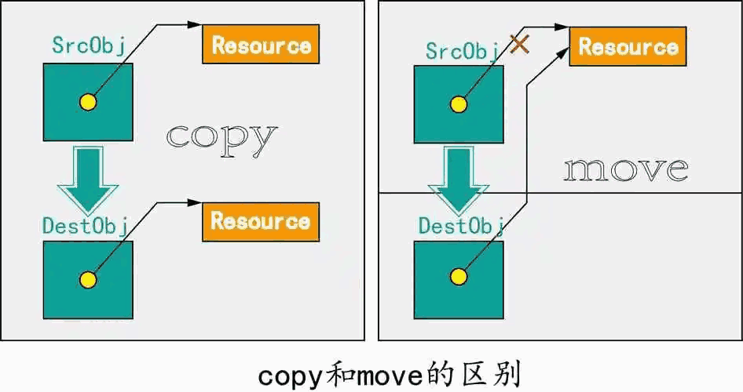

auto 关键字，允许编译器根据初始化表达式的类型自动推导变量的类型。{} 进行初始化的统一语法，可以用于初始化各种类型的对象，包括基本类型、数组、结构体、类等。&& 符号，用于声明右值引用。右值引用具有区分左值和右值的能力，提供了移动语义和完美转发的基础。std::shared_ptr、std::unique_ptr、std::weak_ptr 等智能指针类模板，提供了更安全、更方便的内存管理机制。static_assert 关键字，允许在编译时对表达式进行静态断言，用于自定义的编译时检查和错误提示。std::unordered_map、std::unordered_set）、随机数库、异步任务库（std::async）、类型特征工具。auto是 C++ 中的关键字，用于自动推导变量的类型。它可以让编译器根据初始化表达式的类型自动推导变量的类型，从而简化类型的声明和定义过程。
auto 可以简化变量类型的声明，避免重复书写冗长的类型名。auto 可以方便地适应不同的数据类型，使代码更具有通用性和灵活性。auto 可以减少对具体类型的依赖，使得代码的维护和修改更加灵活和容易。auto 可能会降低代码的可读性，因为类型信息不再明显可见，需要根据上下文推测变量的真实类型。auto 会自动推导变量的类型，可能导致隐式类型转换和意外的行为，尤其是在复杂的表达式或函数中使用时需要特别注意。auto 以简化代码。auto 结合类型推导，可以实现更通用、灵活的模板代码。auto 可以自动推导迭代器的类型，避免显式指定具体类型。auto i = 10; // 推导为 int 类型
auto d = 3.14; // 推导为 double 类型
auto b = true; // 推导为 bool 类型
template <typename T>
auto add(T a, T b) -> decltype(a + b) {
return a + b;
}
std::vector<int> nums = {1, 2, 3, 4, 5};
for (auto it = nums.begin(); it != nums.end(); ++it) {
std::cout << *it << " ";
}
auto i = 10; // 推导为 int 类型
auto d = 3.14; // 推导为 double 类型
auto b = true; // 推导为 bool 类型
template <typename T>
auto add(T a, T b) -> decltype(a + b) {
return a + b;
}
std::vector<int> nums = {1, 2, 3, 4, 5};
for (auto it = nums.begin(); it != nums.end(); ++it) {
std::cout << *it << " ";
}
lambda 表达式的基本语法如下：
[capture](parameters) -> return_type { body }其中：
std::vector<int> nums = {1, 2, 3, 4, 5};
std::for_each(nums.begin(), nums.end(), [](int num) {
std::cout << num << " ";
});
void doSomething(int a, int b, std::function<int(int, int)> callback) {
int result = callback(a, b);
std::cout << "Result: " << result << std::endl;
}
doSomething(5, 3, [](int x, int y) {
return x + y;
});
std::vector<int> nums = {1, 2, 3, 4, 5};
std::vector<int> squares(nums.size());
#pragma omp parallel for
for (size_t i = 0; i < nums.size(); ++i) {
squares[i] = nums[i] * nums[i];
}
左值表示一个内存位置的标识符，可以出现在赋值语句的左边或右边。左值在表达式中是持久的，具有地址，并且可以被修改。可以将其简单理解为"可以取址的表达式"。一般来说，变量、函数或内存中的对象都可以是左值。
右值表示暂时的、临时的值，不能出现在赋值语句的左边。右值在表达式中是短暂的，不具有地址，不能被修改。可以将其简单理解为"没有地址的表达式"。一般来说，常量、字面量、临时对象、表达式的结果等都可以被视为右值。
int x = 10; // x 是一个左值，可以取址和修改
int y = x; // x 是一个右值，不可以取址，只是一个临时值
int z = x + y; // x + y 是一个右值，表达式计算结果是一个临时值
右值引用（R-value reference）是 C++11 引入的一种新的引用类型，用于标识和操作右值。
右值引用使用 && 符号进行声明，例如 int&& 表示一个右值引用类型的整数。右值引用具有以下几个重要的特性和作用：
右值引用的作用主要体现在以下几个方面：
以下是一个简单示例，展示了右值引用的使用：
void processValue(int&& value) {
// 对右值进行操作
// ...
}
int main() {
int x = 10;
processValue(5); // 临时值 5 是一个右值
processValue(x); // x 是一个左值，无法绑定到右值引用
return 0;
}
在这个示例中，processValue() 函数接受一个右值引用参数，可以绑定到临时值 5，但无法绑定到变量 x。右值引用可以用于对右值进行特定的操作，提高代码的效率和灵活性。
移动语义：移动语义为了避免临时对象的拷贝，将内存的所有权从一个对象转移到另外一个对象，高效的移动用来替换效率低下的复制，为类增加移动构造函数。移动构造函数与拷贝构造不同，它并不是重新分配一块新的空间同时将要拷贝的对象复制过来，而是"拿"了过来，将自己的指针指向别人的资源，然后将别人的指针修改为nullptr。
class MyObject {
public:
// 移动构造函数
MyObject(MyObject&& other) noexcept {
// 将资源从 other 移动到当前对象
data_ = other.data_;
other.data_ = nullptr;
}
// 移动赋值运算符
MyObject& operator=(MyObject&& other) noexcept {
// 检查自我赋值
if (this == &other) {
return *this;
}
// 释放当前对象的资源
delete data_;
// 将资源从 other 移动到当前对象
data_ = other.data_;
other.data_ = nullptr;
return *this;
}
private:
int* data_; // 动态分配的内存资源
};当需要移动一个 MyObject 对象时，移动构造函数将获取 other 对象的资源，并将 other 的指针置为 nullptr。移动赋值运算符也类似，先释放当前对象的资源，再将 other 的资源移动到当前对象。
完美转发（Perfect Forwarding）是 C++ 中用来保持传递参数的值类别的技术，它使得函数模板在接受参数时能够保持传递参数的原始值类别，无论是左值还是右值。
完美转发的原理是基于引用折叠（Reference collapsing）和函数重载解析。引用折叠是一种规则，用于在特定情况下将引用类型折叠为一个类型。在函数重载解析过程中，编译器会根据参数的值类别和函数模板的特化匹配最佳的函数。
为了实现完美转发，通常要使用两个重要的特性：
template <typename T>
void process(T&& arg) {
otherFunction(std::forward<T>(arg));
}
void otherFunction(int& arg) {
std::cout << "L-value reference: " << arg << std::endl;
}
void otherFunction(int&& arg) {
std::cout << "R-value reference: " << arg << std::endl;
}
int main() {
int x = 10;
process(x); // 传递左值，调用 L-value 引用版本
process(5); // 传递右值，调用 R-value 引用版本
return 0;
}
在上面的示例中，process 函数是一个模板，并使用转发引用将参数 arg 转发给 otherFunction 函数。由于完美转发的存在，模板类型推导保持了参数的原始值类别，通过重载解析选取对应的函数版本进行调用。
函数模板是一种通用的函数模板声明，其中函数的参数和返回类型可以使用通用的模板参数来表示。函数模板的定义通常以 template<typename T> 或 template<class T> 开始，后跟函数的声明或定义。
下面是一个简单的函数模板的示例：
template<typename T>
T add(T a, T b) {
return a + b;
}
int intResult = add(5, 10); // 实例化为 add<int>(5, 10)，返回 15
double doubleResult = add(3.14, 2.71); // 实例化为 add<double>(3.14, 2.71)，返回 5.85
在这个例子中，add 是一个函数模板，它可以接受相同类型的参数 a 和 b，并返回它们的和。模板参数 T 是一个占位符，表示函数中的类型。在函数调用时，编译器会根据实际的参数类型来实例化函数模板。
模板函数（Template function specialization）是对特定模板参数进行特化的函数定义。特化是指针对特定的模板参数类型编写的特殊版本。特化函数可以提供对特定数据类型的定制化行为。
下面是一个函数模板特化的示例：
template<typename T>
T max(T a, T b) {
return (a > b) ? a : b;
}
template<>
const char* max<const char*>(const char* a, const char* b) {
return strcmp(a, b) > 0 ? a : b;
}
在这个例子中，max 是一个函数模板，用于比较两个值并返回较大的值。然后，通过模板特化 template<> 来定义 max 函数针对 const char* 类型的特殊版本。这个特殊版本使用了 strcmp 函数来比较两个 C 字符串并返回较大的字符串。
智能指针是C++中用于管理动态分配对象的一种特殊指针，它能够自动地分配和释放内存，避免内存泄漏和悬挂指针的问题。常用的智能指针有 unique_ptr、shared_ptr 和 weak_ptr 以及 auto_ptr（已弃用）。
std::move 转移所有权。unique指针规定一个智能指针独占一块内存资源。当两个智能指针同时指向一块内存，编译报错。我们只需要将拷贝构造函数和赋值拷贝构造函数申明为private或delete。不允许拷贝构造函数和赋值操作符。
#include <iostream>
#include <memory>
int main() {
std::unique_ptr<int> uniquePtr(new int(10));
if (uniquePtr) {
std::cout << *uniquePtr << std::endl; // 输出10
}
uniquePtr.reset(); // 手动释放内存
return 0;
}
shared_ptr 允许多个指针共享对同一对象的所有权，通过引用计数来追踪当前有多少个指针共享一个对象。shared_ptr 超出作用域或被重置时，才会释放所管理的对象。std::make_shared 来创建，并且允许拷贝和移动。相关问题: shared_ptr 出现内存泄露怎么办？
共享指针的循环引用计数问题：当两个类中相互定义 shared_ptr 成员变量，同时对象相互赋值时，就会产生循环引用计数问题，最后引用计数无法清零，资源得不到释放。
可以使用 weak_ptr，weak_ptr 是弱引用，weak_ptr 的构造和析构不会引起引用计数的增加或减少。我们可以将其中一个改为 weak_ptr 指针就可以了。
#include <iostream>
#include <memory>
int main() {
std::shared_ptr<int> sharedPtr1 = std::make_shared<int>(10);
std::shared_ptr<int> sharedPtr2 = sharedPtr1;
std::cout << *sharedPtr1 << " " << *sharedPtr2 << std::endl; // 输出10 10
sharedPtr1.reset(); // 释放sharedPtr1所指向的对象
if (sharedPtr2) {
std::cout << *sharedPtr2 << std::endl; // 输出10
}
return 0;
}
weak_ptr 是一种不共享所有权的智能指针，用于解决 shared_ptr 的循环引用问题。
weak_ptr 可以从 shared_ptr 创建，但不能直接访问所管理的对象。
它可以使用 lock() 方法来获取一个有效的 shared_ptr，用于访问所管理的对象。
#include <iostream>
#include <memory>
int main() {
std::shared_ptr<int> sharedPtr = std::make_shared<int>(10);
std::weak_ptr<int> weakPtr(sharedPtr);
if (auto lockedPtr = weakPtr.lock()) {
std::cout << *lockedPtr << std::endl; // 输出10
}
sharedPtr.reset(); // 释放sharedPtr，引用计数为0
if (weakPtr.expired()) {
std::cout << "Weak pointer expired" << std::endl;
}
return 0;
}
C++中有四种类型转换符可用于在不同类型之间进行类型转换：static_cast、dynamic_cast、const_cast 和 reinterpret_cast。
int 转换为 double 等。示例：
int num = 10;
double convertedNum = static_cast<double>(num);
class Base {};
class Derived : public Base {};
Base* basePtr = new Derived();
Derived* derivedPtr = static_cast<Derived*>(basePtr);
dynamic_cast 会在运行时检查转换的安全性，如果转换失败，返回空指针（对于指针转换）或抛出 std::bad_cast 异常（对于引用转换）。示例：
class Base { virtual void foo() {} };
class Derived : public Base {};
Base* basePtr = new Derived();
Derived* derivedPtr = dynamic_cast<Derived*>(basePtr);
if (derivedPtr) {
// 转换成功
}
const_cast 用于去除指针或引用的 const 属性。
const 修饰的对象。const 属性。const_cast 需谨慎，因为修改被 const 修饰的对象会导致未定义行为。仅在确保安全性的前提下使用。示例：
const int num = 10;
int* nonConstPtr = const_cast<int*>(&num);
*nonConstPtr = 20; // 合法：修改nonConstPtr的值
reinterpret_cast 是 C++ 中用于执行低级别的类型转换的关键字（使用 reinterpret_cast 需要格外谨慎）。
reinterpret_cast 在类型转换时只进行位模式的重新解释，不执行任何类型检查或转换操作。reinterpret_cast 可能导致程序行为不确定或非法。reinterpret_cast，并且使用前需要确保类型转换的合法性。示例代码：
int num = 10;
double* doublePtr = reinterpret_cast(&num); // 不安全，可能导致未定义行为
int* intPtr = reinterpret_cast(doublePtr); // 转回原始类型